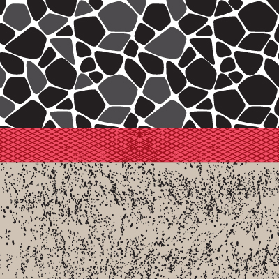
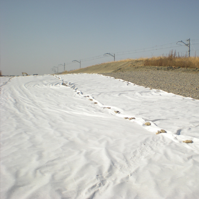

Separar
Separación de dos tipos de terreno de diferentes propiedades físicas. Bien puede ser entre suelo natural y material de aporte o entre dos capas diferentes de suelo apartado.
La misión del geotextil Geotesan es evitar la mezcla delos diferentes terrenos Para ello debe soportar las cargas estáticas y dinámicas del material de aporte y del tráfico durante la instalación así como la retención de los finos para evitar la mezcla.
El geotextil Geotesan, al ser de polipropileno es estable al álcalis del cemento e inerte a prácticamente Iatotalidad de elementos químicos que se encuentran en el terreno.
En esta función son importantes los siguientes parámetros : resistencia al punzonamiento (CBR), resistencia a la tracción, elongación a la rotura, perforación dinámica por caída libre de cono, abertura eficaz de poros y espesor del geotextil.
Función separadora
Los Geotextiles Geotesan, debido a su sistema de fabricación (no tejido agujado, agujeteado o punzonado con una posterior termodifusión) tiene una adecuada elongación que le permite deformarse antes de la rotura y debido al tratamiento térmico, no se separan las fibras, con lo cual absorbe perfectamente, tanto las cargas estáticas (material de aporte), como las dinámicas (tráfico). Al no existir rotura, confina los finos de subsuelo eliminando el agua por subpresión y produciendo una estabilización del sistema.


 retroceder
retroceder